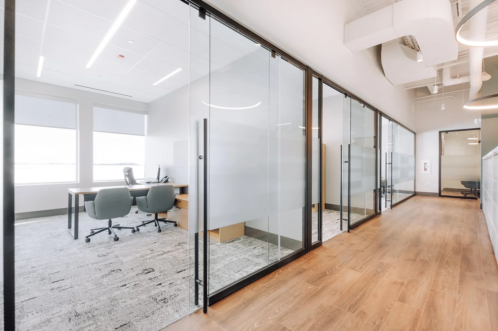
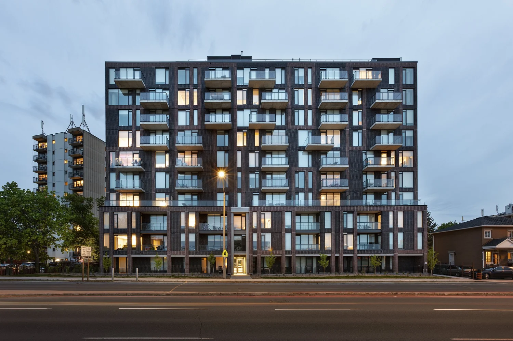

We wanted to showcase some homes we have worked on for our valued clients. These home range from concepts, to homes awaiting construction soon.  Multigenerational semi detached home - QC  Detached homes - Alta Vista - Ottawa